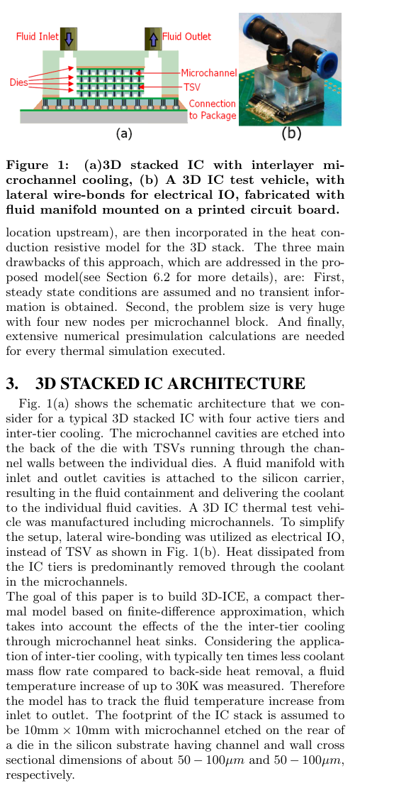
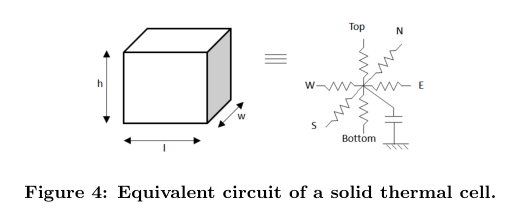
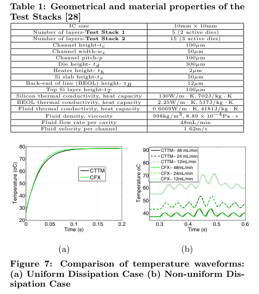
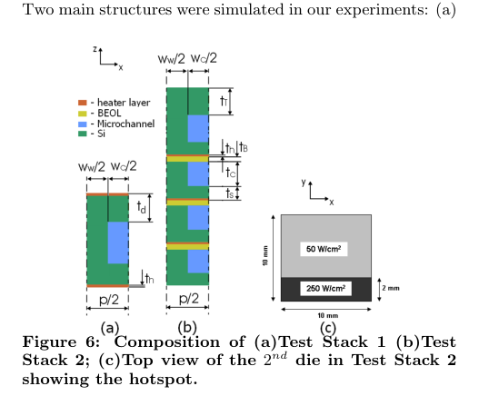
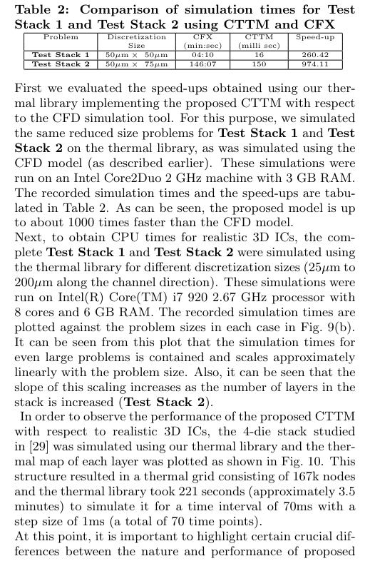
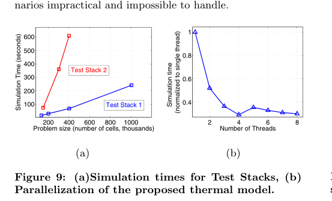

本报告由大模型自动生成，可能存在理解、归纳或数据转述错误；请以原论文为准。 3D-ICE: Fast compact transient thermal modeling for 3D ICs with inter-tier liquid coolingArvind Sridhar, Alessandro Vincenzi, Martino Ruggiero, Thomas Brunschwiler, David Atienza · 2010 IEEE/ACM International Conference on Computer-Aided Design (ICCAD) · 2010 · 原文 · PDF 报告模型：gemini-3.1-pro-preview / high 这是一篇详细解析 2010 年 IEEE 论文《3D-ICE: Fast Compact Transient Thermal Modeling for 3D ICs with Inter-tier Liquid Cooling》的文章。本文将按顺序深入解析该文的背景、推导逻辑和实验结论。 1. 研究背景与引入 (Introduction)为了帮助理解而补充的背景知识：在现代计算机体系结构中，为了突破摩尔定律的物理极限和互连线延迟瓶颈，工业界引入了 3D 堆叠集成电路（3D IC）。它是将多片硅晶圆（die）在垂直方向上堆叠，并利用硅通孔（Through-Silicon Vias, TSV）进行层间数据传输。然而，3D 堆叠极大地缩小了芯片的表面积（footprint），导致单位面积的散热量急剧飙升。传统的背面散热（如在最顶层安装风扇和散热片）难以将堆叠底层芯片的热量散出。针对此问题，物理层面的一种前沿解决方案是“层间微通道液体冷却（Inter-tier microchannel liquid cooling）”：在硅晶圆背面刻蚀出微米级的通道，让冷却液（如水）在芯片层与层之间流过，通过强制对流将热量带走。 本文面临的核心问题：在电子设计自动化（EDA）和体系结构协同设计阶段，架构师需要根据芯片的平面布局（Floorplan）和功耗随时间的变化，预测芯片在运行时的瞬态温度分布。如果温度过高，就需要调整架构设计或触发动态热管理（Dynamic Thermal Management, DTM）。传统的计算流体力学（CFD）仿真软件虽然精确，但速度极慢，无法满足动辄数千万个时钟周期的体系结构仿真需求。 本文的贡献：作者提出了一种名为 3D-ICE（原文未定义/未说明该缩写的展开）的紧凑瞬态热模型（Compact Transient Thermal Model, CTTM）。该模型能够准确预测存在微通道液冷时芯片温度随时间的演变，最高比商业 CFD 工具快 975 倍，且最大温度误差仅为 3.4%。此外，该模型兼容现有的主流 IC 紧凑热模型（如 HotSpot），并没有因为引入液体而带来难以承受的计算开销，且支持多核 CPU 的并行加速。 2. 前人工作与局限性 (Previous Work)作者指出，现有的 3D IC 紧凑热模型（如 HotSpot 等工具）主要基于有限差分法，利用交替方向隐式（ADI）技术来获得快速稳定的瞬态结果，但它们完全没有提供处理强制对流液冷的机制。 另一方面，文献中虽然有一些针对液冷的经验相关性方法，但它们主要用于稳态（Steady-state）仿真，无法提供架构师亟需的瞬态（Transient，即温度随时间波动）信息。离本文最接近的工作是 Mizunuma 等人提出的针对 3D IC 微通道的稳态热模型。但该模型存在三个致命缺陷：1）只能做稳态分析；2）离散化粒度太细，每个微通道块要额外增加 4 个节点，导致问题规模极其庞大；3）每当流动条件改变时，都需要先运行昂贵的数值预仿真来计算“热尾流（thermal wake）”函数。3D-ICE 的设计初衷就是要克服这三个缺点。 3. 3D 堆叠芯片架构 (3D Stacked IC Architecture)本节定义了本文建模的物理硬件对象。如图 1 所示，作者考虑的是一个典型的包含 4 个有源层的 3D 堆叠芯片。微通道空腔刻蚀在晶圆的背面，硅通孔（TSV）穿过各个芯片之间的通道壁（channel walls）。流体歧管（fluid manifold）连接到硅载体上，负责向各个层间空腔输送和回收冷却液。  作者设定芯片堆叠的物理尺寸约束为 。在硅衬底后部刻蚀的微通道，其通道截面和通道壁的尺寸均在 到 之间。在这个架构中，芯片层散发的热量绝大部分是通过微通道中的冷却液带走的（温升可达 30K），因此热模型必须精确追踪流体从入口到出口的温度变化。 4. 紧凑热模型的开发 (Development of the Proposed CTTM)本节是全文的核心，详细推导了如何将流体的物理控制方程转换为 EDA 工具可以快速求解的电学等效网络。 4.1 固体热传导的常规紧凑建模为了将热学问题映射为电学问题，作者首先从固体热传导的能量守恒方程出发（原文公式 1）： 这里， 代表材料的密度（物理属性，输入参数，单位原文未说明）， 是比焓（物理属性，单位原文未说明）， 表示控制体积的内部空间， 计算的是该体积内存储热能的变化率。 是控制体积的表面积， 根据傅里叶定律表示热流密度向量，其中 是材料的热导率（单位原文未说明）， 是温度（状态变量，单位原文未说明）， 是表面的单位法向量（单位原文未说明），该面积分项代表通过热传导流出体积的热量。等式右侧的 是体积内的热生成率（代表芯片中晶体管消耗的电能转化为热能，来自架构仿真的输入功耗，单位原文未说明）。 当控制体积 并在各项同性假设下应用斯托克斯定理，上述积分方程转化为偏微分方程（原文公式 2）： 其中，新的符号 是材料的体积比热容（物理属性，单位原文未说明，下标 原文未独立说明）。随后，作者对三维直角坐标系应用有限差分近似，将空间划分为长度分别为 、、 的网格。令 表示位置（location）为 的网格节点温度（ 是否为整数索引及取值范围原文未说明）。展开拉普拉斯算子后得到差分方程（原文公式 3）： 热-电类比体系：这是 EDA 热仿真的基础。上述公式被类比为一个 RC 电路（图 4）。温度 等效为电压，热流等效为电流。左侧第一项（随时间微分的项）等效为电容充放电，其余空间差分项等效为各个方向上的热传导电阻（由材料的 决定），右侧的热源等效为恒流源。据此，作者定义了每个“热单元（thermal cell）”在上下（top/bottom）、南北（north/south，对应 ）、东西（east/west，对应 ）方向上的热电导 （电阻的倒数，单位原文未说明）和热容 （单位原文未说明，下标 原文未独立说明）（原文公式 4）：  此处 和 是硅材料的热导率和比热容（下标 和 原文未独立说明）。 分别是该单元的长、宽、高（网格划分尺寸，单位原文未说明）。注意，公式中分母用 是因为节点定义在单元中心，热量传导到边界的距离是单元尺寸的一半。组合全芯片的所有单元，就构成了常微分方程组（原文公式 5）： 其中 是包含所有节点温度的列向量（维度原文未说明）； 是由公式 4 计算出的所有电容组成的对角矩阵（维度原文未说明）； 是代表芯片各模块功耗的输入激励向量（维度原文未说明）； 是一个对称的块三对角电导矩阵（维度原文未说明，非对角元素代表相邻节点的连接，对角元素等于与该节点相连的所有电导之和）。 4.2 流体的紧凑建模液体的特殊性在于除了热传导，还有热对流。作者引入了包含流速项的能量守恒方程（原文公式 6）： 这里新增了第三项对流项。其中 原文未定义/未说明（单位原文未说明）； 是流体流出控制体积表面的流速矢量（单位原文未说明）。由于对流项依赖于流体的宏观流动，微分化后产生了一个散度项（原文公式 7）： 第三项 在电路类比中表现为一个受控热源（Temperature controlled heat source）。经过类似公式 3 的差分展开，作者得到了包含流体速度向 方向（假设沿着通道流动）传递热量的差分方程（原文公式 8）。新引入的常数 对应流体在三个方向的等效热导率（单位原文未说明，下标 原文未独立说明，但指代 方向）； 是流体在 方向的平均流速（单位原文未说明，下标 原文未独立说明，下标 指 方向）； 是垂直于 轴的截面积（原文为 ，单位原文未说明，下标 原文未独立说明）； 和 分别代表流体单元后表面（出口）和前表面（入口）的表面温度（单位原文未说明，下标 原文未独立说明）。 4.3 微通道的紧凑模型在实际设计的微通道中，流体总是单向（设为 向）流动的。因为在这个方向上对流远大于热传导，所以作者选择忽略公式 8 中流体在 y 方向的热传导项（即 和 在微通道单元中不存在）。对流项被等效转换为了 RC 电路中的“压控电流源（voltage-controlled current source）”。 为了计算流速，作者通过芯片外部设定的泵送能力定义了（原文公式 9）： 其中 是 3D IC 中每个微通道的体积流量（由硬件边界条件决定的常数，单位原文未说明）， 是截面积。在计算单元界面温度时，作者使用了一阶中心差分，即假设边界温度等于相邻两个单元中心的平均值（例如 ）。代入后，控制单元 5 的对流项转化为（原文公式 10）： 新符号 表示对流电导（单位原文未说明，下标 原文未独立说明）。这说明流体单元的热量传递直接依赖于上游节点 和下游节点 的绝对温度差。 边界条件的特殊处理： 对于通道入口（节点 2 之前），流体温度等于外部冷却系统的恒定入口温度 （单位原文未说明，下标 原文未独立说明），这构成狄利克雷边界条件（Dirichlet boundary condition），在矩阵中相当于给方程组的 增加了一个外接输入源。对于通道出口（节点 8 之后），热量被带离仿真区域，假设不再发生温升，即温度梯度为零，这构成诺伊曼边界条件（Neumann boundary condition）。 随后，作者需要定义微通道固体壁与流体之间的热交换能力（原文公式 11）： 此处的 和 分别是流体与通道顶/底面以及侧面之间的对流传热系数（单位原文未说明，下标 原文未独立说明， 指 vertical and side）。这些参数不能随意假定，必须通过经验公式求得（原文公式 12）： 其中 是冷却液的导热率（单位原文未说明，下标 原文未独立说明）； 是通道的水力直径（定义为 ，单位原文未说明，下标 原文未独立说明）； 是努塞尔数（Nusselt number，单位原文未说明）。在假定流体处于充分发展的流体动力学和热边界层状态下，微通道中的 与流速无关，仅由通道的长宽比（Aspect ratio, ，单位原文未说明）决定。作者采用了 London 和 Shah 推导的经验公式（原文公式 13，涉及一系列基于 的多项式拟合系数）来计算 。 模型优化的结果：将上述压控电流源项加入原有的电导矩阵 后，由于热量顺着水流只向单向传递（上游影响下游，下游不影响上游），使得原本完全对称的矩阵 变得不再对称（反映了系统的非互易性）。这在数学上改变了求逆矩阵的难度，但在物理上极大地减少了模型所需的节点数（相较于前人方法）。 5. 软件实现特征 (Implementation Features)本节展示了 3D-ICE 作为 EDA 工具的系统架构。工具采用 C 语言编写。 架构-EDA跨层接口：该工具通过解析物理描述文件（决定了矩阵 和 ）和平面布局信息，建立三维热网格。最关键的是，各个架构模块的功耗分布既可以作为时间函数写入文本文件，也可以通过网络套接字（network socket）实时从外部设备（如仿真平台）输入。这就实现了可能的硬件/软件协同仿真（HW-SW cosimulation）：架构模拟器输出每个周期的功耗给 3D-ICE，3D-ICE 计算出最新温度波形反馈给架构模拟器，由此产生的整体框架可用于系统设计空间探索和早期的热感知软件开发。 在时间积分求解上，作者采用了无条件稳定的向后欧拉法（Backward Euler method，原文公式 14）： 注意原文符号冲突的解释：这里的 是用于数值积分的时间步长（time-step，单位原文未说明），不再是前文提到的网格高度。 是 时刻的温度向量（维度原文未说明）。、、 的维度原文均未说明。 每个时间步都需要求解一个大型稀疏线性方程组。作者测试了 KLU 和 SuperLU 两种稀疏矩阵求解库，发现 SuperLU 在本问题中速度更快。 6. 实验结果 (Experimental Results)本节从准确率和速度两方面评估了 3D-ICE，并与商业 CFD 工具 Ansys CFX 进行了对比。CFX 采用有限体积法求解纳维-斯托克斯方程，是工业界公认的高精度但极耗时的基准。 实验配置（表 1 与图 6）： 作者设计了两个测试栈（Test Stack）。Stack 1 包含 2 个有源层和 1 层微通道；Stack 2 包含 3 个有源层和 4 层微通道。为了验证，作者设定了芯片的材料参数（例如硅的导热率 ）和流体边界约束（入口流量 ）。CFD 模型需要 170k 个非结构化网格节点，而 3D-ICE 的网格按 （刚好包含整个通道截面）划分，节点数小得多。   准确率验证：
性能评估与加速（表 2 与图 9）： 对于规模较小的 Stack 1 和 Stack 2，表 2 显示 3D-ICE 耗时在几百毫秒级别，而 CFX 需要数分钟到两小时。3D-ICE 对于 Stack 2 的加速比高达 974 倍。 图 9(b) 进一步展示了作者通过引入 SuperLU 多线程版本实现了热库的并行化，在使用 8 个线程时获得了显著的 CPU 时间缩减。最终，仿真一个包含 16.7 万个节点的大型真实 4 层堆叠芯片，模拟 70 毫秒的物理时间（步长 1 毫秒）仅需 221 秒（约 3.5 分钟）。这使得它可以在合理的运算时间内被纳入架构设计空间探索（design space exploration）中。   7. 总结与逻辑主线 (Conclusions)全文逻辑主线： 随着微电子技术演进，3D 芯片带来了极高的算力和带宽，但也引发了致命的散热危机。液冷微通道作为硬件解决方案被提出。然而，架构师在设计这种芯片（进行平面布局或电源管理策略开发）时，缺乏能在早期阶段提供“快速且支持瞬态液体热力学反馈”的 EDA 仿真工具。 为此，本文提出了 3D-ICE。作者从最基础的能量守恒出发，保留了成熟的固体传热 RC 电路网络，并通过创造性地将流体沿通道的“对流项”转化为“压控电流源”，避免了前人方法中过度离散化和大量预计算的弊端。这虽然导致热电导矩阵变得不对称，但配合高效的稀疏矩阵求解器（SuperLU），成功实现了在保持 3.4% 以内误差的同时，获得近千倍的仿真加速。 局限性与前提假设（不可过度推广的部分）：
|